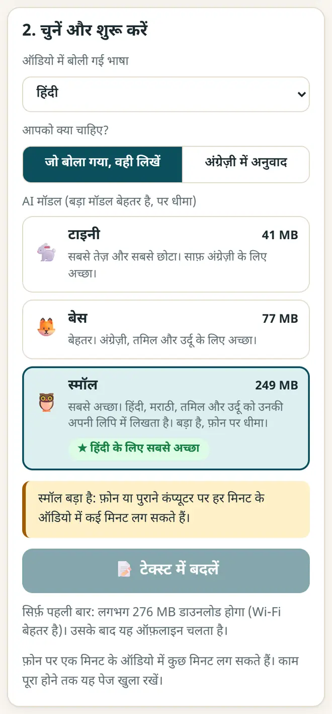
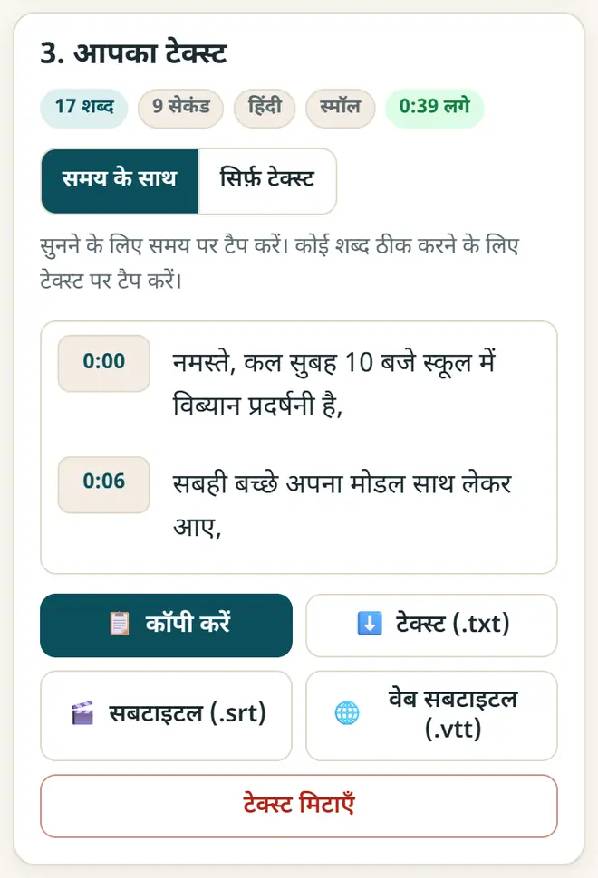

हिंदी वॉइस टाइपिंग: बोलकर मुफ़्त में टेक्स्ट कैसे बनाएँ
लंबे मैसेज, नोट्स या चिट्ठियाँ टाइप करते-करते थक गए? अपनी आवाज़ रिकॉर्ड करें या WhatsApp का वॉइस नोट चुनें, और AI उसे लिख देगा। सब कुछ आपके अपने डिवाइस पर चलता है, इसलिए निजी ऑडियो निजी ही रहता है।
छोटा जवाब
वॉइस नोट से टेक्स्ट खोलें, “माइक से रिकॉर्ड करें” दबाकर बोलें (या वॉइस नोट के लिए “फ़ाइल चुनें” दबाएँ)। बोली गई भाषा चुनें, हिंदी को हिंदी अक्षरों में पाने के लिए “स्मॉल” मॉडल लें और “टेक्स्ट में बदलें” दबाएँ। टेक्स्ट पढ़ें, ग़लत शब्द ठीक करें, फिर कॉपी करें या “टेक्स्ट (.txt)” डाउनलोड करें। अंग्रेज़ी बहुत सही आती है; हिंदी “स्मॉल” से ठीक-ठाक आती है और एक बार जाँचनी पड़ती है।
5 स्टेप में आवाज़ से टेक्स्ट
-
आवाज़ रिकॉर्ड करें या फ़ाइल जोड़ें
वॉइस नोट से टेक्स्ट खोलें। “माइक से रिकॉर्ड करें” दबाएँ, साफ़ बोलें और “रोकें और इस्तेमाल करें” दबाएँ। या “फ़ाइल चुनें” दबाकर WhatsApp का वॉइस नोट, कोई रिकॉर्डिंग या वीडियो चुनें (30 मिनट तक)।
-
बोली गई भाषा चुनें
“ऑडियो में बोली गई भाषा” में हिंदी, अंग्रेज़ी या कोई और भाषा चुनें। भाषा अपने-आप पहचानने का विकल्प भी चलता है, लेकिन ख़ुद चुनना ज़्यादा भरोसेमंद है।
-
AI मॉडल चुनें
“टाइनी” और “बेस” तेज़ हैं और साफ़ अंग्रेज़ी के लिए अच्छे हैं। हिंदी अक्षरों में हिंदी के लिए “स्मॉल” चुनें: यह सबसे सही लिखता है, लेकिन इसका डाउनलोड बड़ा है और यह धीमा है, इसलिए फ़ोन से बेहतर लैपटॉप या कंप्यूटर है।

बोली गई भाषा और AI मॉडल चुनें। -
टेक्स्ट में बदलें
“टेक्स्ट में बदलें” दबाएँ और पेज खुला रखें। पहली बार AI मॉडल एक बार डाउनलोड होता है (Wi-Fi बेहतर है)। टेक्स्ट हिस्सा-दर-हिस्सा आता है।
-
ठीक करें और इस्तेमाल करें
वह हिस्सा दोबारा सुनने के लिए समय पर टैप करें, और शब्द ठीक करने के लिए टेक्स्ट पर टैप करें। फिर टेक्स्ट कॉपी करें, या “टेक्स्ट (.txt)” डाउनलोड करें, या वीडियो के लिए “सबटाइटल (.srt)”।

टेक्स्ट समय के साथ आता है। शब्द ठीक करने के लिए उस पर टैप करें।
यह कितना सही लिखता है? सच्ची बात
- अंग्रेज़ी: हर मॉडल से बहुत अच्छी, फ़ोन पर भी।
- हिंदी: “स्मॉल” से ठीक-ठाक। कुछ शब्द ग़लत हो सकते हैं, ख़ासकर नाम, संख्याएँ और हिंदी-अंग्रेज़ी मिली बात, इसलिए भेजने से पहले एक बार पढ़ लें।
- फ़ोन पर “स्मॉल” बहुत भारी पड़ सकता है और एरर देकर रुक सकता है। वहाँ “बेस” चलता है, लेकिन हिंदी की वर्तनी कच्ची आती है।
- यह लाइव टाइपिंग नहीं है: पहले आप बोलते हैं, टेक्स्ट बाद में आता है। साफ़ बोलें, एक बार में एक ही व्यक्ति, और आसपास शोर कम हो। ओड़िया अभी उपलब्ध नहीं है।
नए मुफ़्त टूल और हिंदी में AI के पाठ पाएँ
हमारी ईमेल लिस्ट से जुड़ें: नए मुफ़्त ऐप, नई गाइड और AI पर हिंदी वीडियो पाठ की जानकारी आपको मिलती रहेगी। कोई स्पैम नहीं।
सिर्फ़ वयस्कों (18+) के लिए। आप कभी भी नाम हटवा सकते हैं।
हम ये टूल क्यों सुझाते हैं
- सबके लिए मुफ़्त: न विज्ञापन, न साइन-अप, न कोई पेड प्लान।
- प्राइवेट: आपकी फ़ाइलें और जानकारी आपके अपने डिवाइस पर ही रहती हैं।
- फ़ोन, लैपटॉप या स्मार्टबोर्ड पर चलते हैं, और एक बार खुलने के बाद बिना इंटरनेट भी।
- हिंदी समेत 12 भाषाओं में।
वीडियो से सीखना पसंद है? हमारे YouTube चैनल पर AI और मुफ़्त टूल्स के हिंदी पाठ देखें।
अक्सर पूछे जाने वाले सवाल
क्या हिंदी बोलने पर यह हिंदी अक्षरों में लिखता है?
हाँ, “स्मॉल” मॉडल से। छोटे मॉडल हिंदी के लिए कम भरोसेमंद हैं: “बेस” कच्ची वर्तनी देता है। अंग्रेज़ी हर मॉडल अच्छी लिखता है।
क्या मेरी आवाज़ कहीं अपलोड होती है?
नहीं। सिर्फ़ AI मॉडल आपके डिवाइस पर डाउनलोड होता है, वह भी एक बार। आपकी रिकॉर्डिंग और वॉइस नोट कभी अपलोड नहीं होते, इसलिए निजी मैसेज और मीटिंग के लिए यह सुरक्षित है।
WhatsApp के वॉइस नोट को टेक्स्ट में कैसे बदलें?
WhatsApp में वॉइस नोट को देर तक दबाएँ, Share पर टैप करें और उसे फ़ोन में सेव करें। फिर यहाँ “फ़ाइल चुनें” से उसे चुनें और “टेक्स्ट में बदलें” दबाएँ।
और कौन-सी भाषाएँ चलती हैं?
“स्मॉल” से हिंदी, मराठी, तमिल और उर्दू अपने अक्षरों में लिखी जाती हैं। बाक़ी भारतीय भाषाएँ अंग्रेज़ी अक्षरों में आती हैं; उनके लिए अक्सर “अंग्रेज़ी में अनुवाद” ज़्यादा काम का है। ओड़िया अभी उपलब्ध नहीं है।
इसमें कितना समय लगता है?
यह आपके डिवाइस और मॉडल पर निर्भर है। फ़ोन पर एक मिनट के ऑडियो में कुछ मिनट लग सकते हैं। पहली बार मॉडल भी एक बार डाउनलोड होता है: लगभग 70 MB (“टाइनी”) से लगभग 280 MB (“स्मॉल”) तक।
काम की लगी?
इसे किसी दोस्त, साथियों या अपने स्कूल के WhatsApp ग्रुप में भेजें।